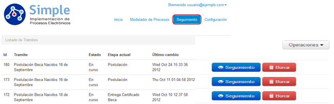
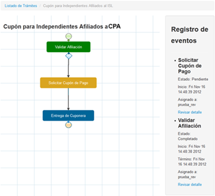

2.4. Seguimiento de Procesos
A medida que los Modelos de Procesos diseñados para la digitalización de trámites se empiecen a utilizar, serán generados diversos procesos internos dentro de Simple, uno de ellos permitirá realizar el seguimiento de los trámites registrando su etapa actual, el responsable, fecha de asignación, entre otros. Esta opción se encuentra disponible únicamente para usuario con acceso a BackEnd, no para el usuario quien ha generado el trámite.
Para revisar el seguimiento, debe dirigirse hacia el menú de Seguimiento dentro del menú principal de BackEnd con esto ingresará al seguimiento de trámites de Simple.
La siguiente imagen representa la pantalla de trabajo para la realización de seguimientos:

Figura 49: "Ventana de Seguimiento de Procesos"
Como se visualiza en la imagen anterior desplegarán todos los trámites iniciados en Simple sin filtros, indicando su ID, el tipo de Trámite, su estado, la etapa actual en que se encuentra el trámite y finalmente la fecha con la última fecha realizada sobre el trámite. Para revisar el detalle de un trámite en particular deberá hacer clic sobre el botón Seguimiento del costado derecho del trámite a visualizar, con esto se abrirá la ventana de detalle para un seguimiento de Simple, tal como se puede visualizar en la siguiente imagen:

Figura 50: "Seguimiento de Procesos"
Se puede apreciar en la imagen el despliegue de las tareas del proceso correspondiente a Cupón para Afiliados a CPA cada color de caja representa el estado actual de la tarea, siendo los siguientes:
- Caja de color Verde : Indica que la tarea del proceso se ha realizado, por lo que el proceso avanzó a la siguiente tarea.
- Caja de color Amarillo
 : Indica que la tarea esta seleccionada pero aún no ha sido gestionado su procesamiento, el proceso se encuentra en este estado, a la espera de ser procesado.
: Indica que la tarea esta seleccionada pero aún no ha sido gestionado su procesamiento, el proceso se encuentra en este estado, a la espera de ser procesado. - Caja de color Azul : Indica una tarea en la cual el flujo del proceso aún no llega a su ejecución, o el flujo del proceso por su lógica interna no pasó por esta tarea.
En el costado derecho del a ventana, podrá visualizar el registro de eventos completo del proceso, el cual le indicará el estado de la tarea, fecha de inicio, fecha de termino, cual fue el usuario asignado, puede ver aún más detalles presionando sobre el link Registrar detalle.